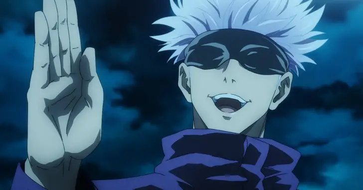

Voltar
Personalidade de Gojo Satoru:
Satoru é um indivíduo complexo,já que normalmente é indiferente e brincalhão com pessoas como seus alunos, colegas próximos e amigos, mas antipático e cruel com pessoas como Executivos Feiticeiros. Ele está muito confiante em suas habilidades e reputação como um feiticeiro poderoso, casualmente descartando ameaças pessoais de Sukuna dizendo que ele poderia derrotar o Rei das Maldições facilmente.Em uma crise, Gojo é capaz de ter sangue frio. Ele prioriza a destruição de seus inimigos em vez de salvar pessoas inocentes quando pensa que o sacrifício é inevitável. Gojo não causará nenhum dano duradouro ou matará qualquer pessoa inocente para obter vantagem.

Curiosidades sobre Gojo Satoru:
De acordo com Akutami, Gojo provavelmente tem mais de 190 centímetros de altura.
Ele começou a comer doces como forma de estimular o cérebro, mas acabou gostando de doces.
Ele pode fazer qualquer coisa que tentar, então ele tenta não se envolver muito com nada. Segundo ele, tudo isso pelo bem da próxima geração.
O diretor Yaga era o professor de Gojo quando ele era estudante.
O rosto de Gojo foi regularmente mostrado na prequela de JUMP GIGA: Tokyo Metropolitan Curse Technical School (todos os quatro capítulos).
O nome ‘Satoru’ (さ と る, サ ト ル) é um nome masculino japonês derivado do verbo japonês que significa "saber" ou "compreender". Satoru pode ser escrito usando diferentes caracteres kanji que significam (悟 る) "seja espiritualmente desperto" ou "alcance uma percepção superior". Outros significados de nomes incluem, mas não estão limitados a "iluminação" (悟), "sabedoria" (智) e "filosofia" (哲).
Voltar
© 25/05/2023 Nicolas Bonacina e João Pedro. Todos os direitos reservados.
© 25/05/2023 Nicolas Bonacina e João Pedro. Todos os direitos reservados. IFMS-Campus Dourados